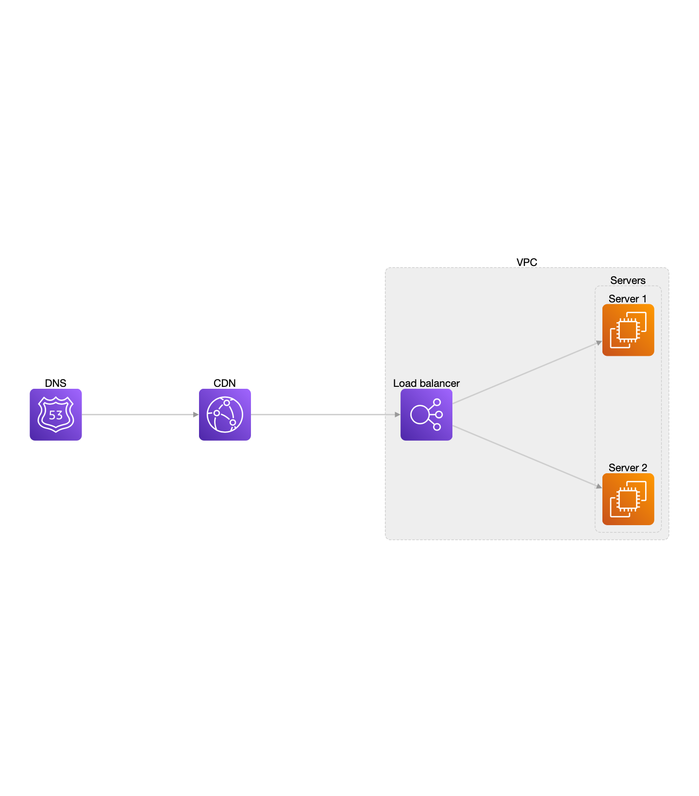
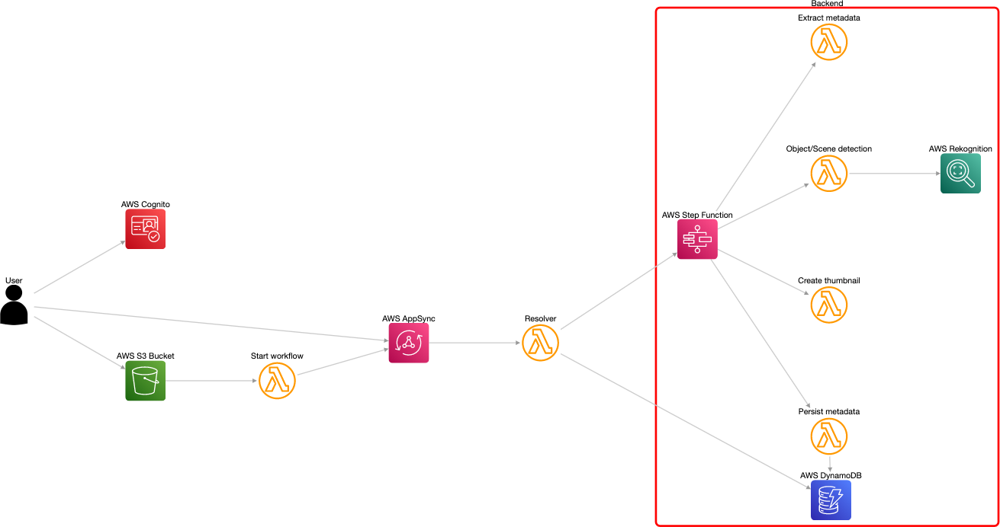
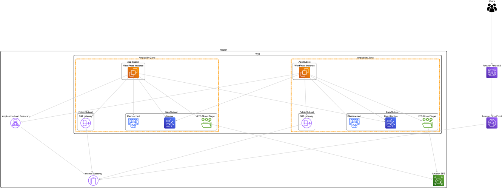

Basic

diagram "basic" [direction=lr] {
// creating the nodes
aws.route53 DNS;
aws.cloudfront cf [label="CDN"];
group vpc [label="VPC"] {
aws.elasticLoadBalancing load_balancer [label="Load balancer"];
group servers [label="Servers"] {
aws.ec2 server1 [label="Server 1"];
aws.ec2 server2 [label="Server 2"];
}
}
// creating the edges
DNS -> cf -> load_balancer [stroke=blue,style=dashed];
load_balancer => servers;
}
Serverless image processing

diagram "serverless image processing" [direction=lr] {
generic.user user [label="User"];
aws.appsync appsync [label="AWS AppSync"];
aws.s3 bucket [label="AWS S3 Bucket"];
aws.cognito cognito [label="AWS Cognito"];
aws.lambdaFunction workflow [label="Start workflow"];
aws.lambdaFunction resolver [label="Resolver"];
group backend [label="Backend",style=solid,opacity=0,stroke=red,width=4] {
aws.stepFunctions stepFunction [label="AWS Step Function"];
aws.lambdaFunction extraction [label="Extract metadata"];
aws.lambdaFunction detection [label="Object/Scene detection"];
aws.lambdaFunction thumbnailing [label="Create thumbnail"];
aws.lambdaFunction persistence [label="Persist metadata"];
aws.dynamodb dynamo [label="AWS DynamoDB"];
aws.rekognition rekognition [label="AWS Rekognition"];
stepFunction -> extraction;
stepFunction -> detection;
stepFunction -> thumbnailing;
stepFunction -> persistence;
persistence -> dynamo;
detection -> rekognition;
}
user -> cognito;
user -> appsync;
user -> bucket;
bucket -> workflow;
workflow -> appsync;
appsync -> resolver;
resolver -> stepFunction;
resolver -> dynamo;
}
Wordpress

diagram "wordpress" [direction=tb] {
generic.users users [label="Users"];
aws.route53 dns [label="Amazon Route 53"];
aws.cloudfront cf [label="Amazon CloudFront"];
group region [label="Region",opacity=0,style=solid,stroke=black,width=2] {
aws.vpcInternetGateway igw [label="Internet Gateway"];
aws.alb alb [label="Application Load Balancer"];
aws.efs efs [label="Amazon EFS"];
alb <-> igw;
group vpc [label="VPC",opacity=0,style=solid,stroke=black,width=2] {
group az1 [label="Availability Zone",opacity=0,stroke="rgb(255,153,0)",width=5] {
group publicSubnet1 [label="Public Subnet",opacity=0,style=solid,stroke=black] {
aws.vpcNatGateway nat1 [label="NAT gateway"];
}
group appSubnet1 [label="App Subnet",opacity=0,style=solid,stroke=black] {
aws.ec2 app1 [label="WordPress Instance"];
}
group dataSubnet1 [label="Data Subnet",opacity=0,style=solid,stroke=black] {
aws.elasticacheForMemcached cache1 [label="Memcached"];
aws.aurora master [label="Master"];
aws.efsFileSystem efs1 [label="EFS Mount Target"];
}
app1 -> nat1;
app1 <-> cache1;
app1 <-> master;
app1 <-> efs1;
}
group az2 [label="Availability Zone",opacity=0,stroke="rgb(255,153,0)",width=5] {
group publicSubnet2 [label="Public Subnet",opacity=0,style=solid,stroke=black] {
aws.vpcNatGateway nat2 [label="NAT gateway"];
}
group appSubnet2 [label="App Subnet",opacity=0,style=solid,stroke=black] {
aws.ec2 app2 [label="WordPress Instance"];
}
group dataSubnet2 [label="Data Subnet",opacity=0,style=solid,stroke=black] {
aws.elasticacheForMemcached cache2 [label="Memcached"];
aws.aurora replica [label="Read Replica"];
aws.efsFileSystem efs2 [label="EFS Mount Target"];
}
app2 -> nat2;
app2 <-> cache2;
app2 <-> replica;
app2 <-> efs2;
}
nat1 -> igw;
nat2 -> igw;
app1 <-> alb;
app2 <-> alb;
efs1 <-> efs;
efs2 <-> efs;
app1 <-> replica;
app2 <-> master;
master -> replica;
}
}
users <-> dns <-> cf <-> igw;
}